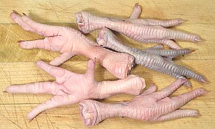
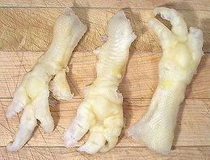

Chicken Feet

In Asia chicken feet are enjoyed in soup, stews and on their own by all
classes. In South Africa they are much eaten but most commonly by the poor.
Chicken feet also play a part in the cuisines of Eastern Europe and the
US South. In Thailand, boned chicken feet are used in salads.
Chicken feet have no meat but are high in collagen and reputed to be good
for joints and wrinkles.
More on Chickens.
Buying:
Find them in ethnic markets, particularly those
serving Asian communities. In Southern California they're generally
packed in foam trays weighing about 1-1/2 pounds, about 23 feet, and
are completely cleaned and ready to go except for clipping off the
claws (usually left on in South African practice).
Prep:
In life, chicken feet have a hard yellow scally
outer skin but this is removed before they go to market, at least around
here. If any remains, scrape it off. Cut off the claws (kitchen shears)
and trim off any hard spots on the bottom of the feet. If your chicken
feet are not perfectly clean rub them with salt to clean them thoroughly.
Rinse and scald in boiling water for 1 minute, drain and cool.
Cooking:
Chicken feet are often boiled in soup stock to
add body. They are also used as an ingredient in soups and stews. In Asia
they are often served whole, generally after deep frying them then stewing
them in a sauce. Cooking time is generally about 1-1/2 hours or just a bit
more.
In Chinese dim sum restaurants whole chicken feet are a common item,
most often deep fried and then stewed in a black bean sauce. The
proper way to eat them is to pick up a foot with chopsticks (significant
chopstick skills required) and start eating from the tips of the toes
(claws are always removed). They are taken a joint at a time and the bone
is spit out after the edable part is enjoyed.
In South Africa chicken feet (Walkie) are often grilled along with the
heads (Talkie). Not only do they not cut off the claws, for "regular"
(crunchy) they don't scrape off the scaly layer. For "well done" (soft)
the scales are scraped off.
Boned Chicken Feet

Boned Chicken Feet are used in salads in Southeast Asia, particularly
Thailand and Malaysia. They are boned by steaming or simmering until the
skin and tendons are like a stiff jelly. The bones are then pushed out
leaving the tendons still in the chicken foot shape.
The photo specimens were purchased at a large market in Los Angeles
serving Chinese and Southeast Asian communities.
bd_chkfeeta 080919 - www.clovegarden.com
©Andrew Grygus - agryg@clovegarden.com - Photos
on this page not otherwise credited © cg1
- Linking to and non-commercial use of this page permitted